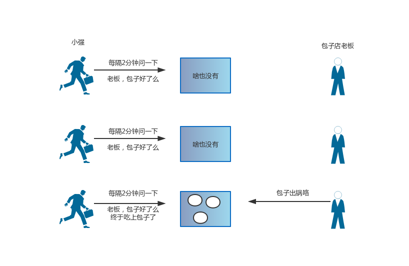
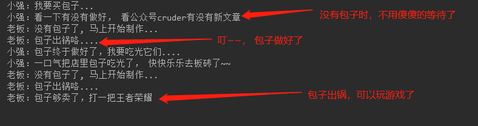
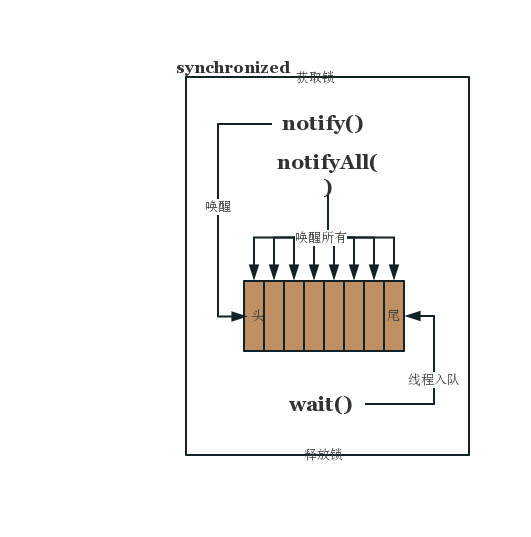

这是一篇走心的填坑笔记，自学Java的几年总是在不断学习新的技术，一路走来发现自己踩坑无数，而填上的坑却屈指可数。突然发现，有时候真的不是几年工作经验的问题，有些东西即使工作十年，没有用心去学习过也不过是一个10年大坑罢了（真实感受）。
刚开始接触多线程时，就知道有等待/唤醒这个东西，写过一个demo就再也没有看过了，至于它到底是个什么东西，或者说它能解决什么样的问题，估计大多数人和我一样都是模棱两可。这次笔者就尝试带你搞懂等待/唤醒机制，读完本文你将get到以下几点：
假设今天要发工资，强老板要去吃一顿好的，整个就餐流程可以分为以下几个步骤：
public static void main(String[] args) {
// 是否还有包子
AtomicBoolean hasBun = new AtomicBoolean();
// 包子铺老板
new Thread(() -> {
try {
// 一直循环查看是否还有包子
while (true) {
if (hasBun.get()) {
System.out.println("老板：检查一下是否还剩下包子...");
Thread.sleep(3000);
} else {
System.out.println("老板：没有包子了, 马上开始制作...");
Thread.sleep(1000);
System.out.println("老板：包子出锅咯....");
hasBun.set(true);
}
}
} catch (InterruptedException e) {
e.printStackTrace();
}
}).start();
new Thread(() -> {
System.out.println("小强：我要买包子...");
try {
// 每隔一段时间询问是否完成
while (!hasBun.get()) {
System.out.println("小强：包子咋还没做好呢~");
Thread.sleep(3000);
}
System.out.println("小强：终于吃上包子了....");
} catch (InterruptedException e) {
e.printStackTrace();
}
}).start();
}在上文代码中存在一个很大的问题，就是老板需要不断的去检查是否还有包子，而客户则需要隔一段时间去看催一下老板，这显然是不合理的，这就是典型的循环等待问题。

这种问题的代码中通常是如下这种模式：
while (条件不满足) {
Thread.sleep(3000);
}
doSomething();对应到计算机中，则暴露了一个问题：不断通过轮询机制来检测条件是否成立， 如果轮询时间过小则会浪费CPU资源，如果间隔过大，又导致不能及时获取想要的资源。
为了解决循环等待消耗CPU以及信息及时性问题，Java中提供了等待唤醒机制。通俗来讲就是由主动变为被动， 当条件成立时，主动通知对应的线程，而不是让线程本身来询问。
等待/唤醒机制，又叫等待通知（笔者更喜欢叫唤醒而非通知），是指线程A调用了对象O的wait()方法进入了等待状态，而另一个线程调用了O的notify()或者notifyAll()方法，线程A收到通知后从对象O的wait()方法返回，进而执行后续操作。
上诉过程是通过对象O，使得线程A和线程B之间进行通信, 在线程中调用了对象O的wait()方法后线程久进入了阻塞状态，而在其他线程中对象O调用notify()或notifyAll方法时，则会唤醒对应的阻塞线程。
等待/唤醒机制的相关方法是任意Java对象具备的，因为这些方法被定义在所有Java对象的超类Object中。
notify： 通知一个在对象上等待的线程，使其从wait()方法返回，而返回的前提是该线程获取到对象的锁
notifyAll: 通知所有等待在该对象上的线程
wait: 调用此方法的线程进入阻塞等待状态，只有等待另外线程的通知或者被中断才会返回，调用wait方法会释放对象的锁
wait(long) : 等待超过一段时间没有被唤醒就超时自动返回，单位是毫秒。
public static void main(String[] args) {
// 是否还有包子
AtomicBoolean hasBun = new AtomicBoolean();
// 锁对象
Object lockObject = new Object();
// 包子铺老板
new Thread(() -> {
try {
while (true) {
synchronized (lockObject) {
if (hasBun.get()) {
System.out.println("老板：包子够卖了，打一把王者荣耀");
lockObject.wait();
} else {
System.out.println("老板：没有包子了, 马上开始制作...");
Thread.sleep(3000);
System.out.println("老板：包子出锅咯....");
hasBun.set(true);
// 通知等待的食客
lockObject.notifyAll();
}
}
}
} catch (InterruptedException e) {
e.printStackTrace();
}
}).start();
new Thread(() -> {
System.out.println("小强：我要买包子...");
try {
synchronized (lockObject) {
if (!hasBun.get()) {
System.out.println("小强：看一下有没有做好， 看公众号cruder有没有新文章");
lockObject.wait();
} else {
System.out.println("小强：包子终于做好了，我要吃光它们....");
hasBun.set(false);
lockObject.notifyAll();
System.out.println("小强：一口气把店里包子吃光了， 快快乐乐去板砖了~~");
}
}
} catch (InterruptedException e) {
e.printStackTrace();
}
}).start();
}
上述流程，减少了轮询检查的操作，并且线程调用wait()方法后，会释放锁，不会消耗CPU资源，进而提高了程序的性能。
等待、唤醒是线程间通信的手段之一，用来协调多个线程操作同一个数据源。实际应用中通常用来优化循环等待的问题，针对等待方和通知方，可以提炼出如下的经典范式。
需要注意的是，在等待方执行的逻辑中，一定要用while循环来判断等待条件，因为执行notify/notifyAll方法时只是让等待线程从wait方法返回，而非重新进入临界区
/**
* 等待方执行的逻辑
* 1. 获取对象的锁
* 2. 检查条件，如果条件不满足，调用对象的wait方法，被通知后重新检查条件
* 3. 条件满足则执行对应的逻辑
*/
synchronized(对象){
while(条件不满足){
对象.wait()
}
doSomething();
}
/**
* ！！ 通知方执行的逻辑
* 1. 获取对象的锁
* 2. 改变条件
* 3. 通知(所有)等待在对象上的线程
*/
synchronized(对象){
条件改变
对象.notify();
}这个编程范式通常是针对典型的通知方和等待方，有时双方可能具有双重身份，即使等待方又是通知方，正如我们上文中的案例一样。
相信这个问题有半数工程师都不知道，当执行wait()方法，锁自动被释放；但执行完notify()方法后，锁不会释放，而是要执行notify()方法所在的synchronized代码块后才会释放。这一点很重要，也是很多工程师容易忽略的地方。
lockObject.notifyAll();
System.out.println("小强：一口气把店里包子吃光了， 快快乐乐去板砖了~~");案例代码中，故意设置成先notifyAll，然后在打印；上文图中的结果也印证了了我们的描述，感兴趣的小伙伴可以动手执行一下案例代码哦。
在等待、唤醒编程范式中的wait，notify，notifyAll方法往往不能直接调用， 需要在获取锁之后的临界区执行
并且只能唤醒等待在同一把锁上的线程。
当线程调用wait方法时会被加入到一个等待队列，当执行notify时会唤醒队列中第一个等待线程(等待时间最长的线程)，而调用notifyAll时则会唤醒等待线程中所有的等待线程。

在用等待唤醒机制优化循环等待的过程中，有一个重要的特征就是原本的sleep()方法用wait()方法取代，他们的最大的区别在于wait方法会释放锁，而sleep不会，除此之外，还有个重要的区别，sleep是Thread的方法，可以在任意地方执行；而wait是Object对象的方法，必须在synchronized代码块中执行。